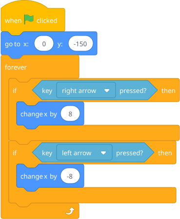
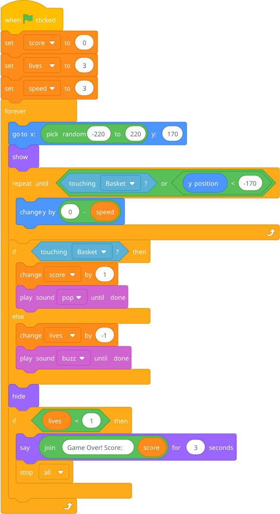

Build a proper falling objects game: objects fall from the sky, a basket/character moves with arrow keys, catching objects increases score, missing them costs a life. Three lives and you're out.
This combines: forever loops (game loop), conditionals (touching? hit bottom?), variables (score, lives), events (arrow keys).
Prep: You need two sprites — a basket/character at the bottom, and a falling object (apple, star, whatever). Create three variables: score, lives, speed.
Basket sprite:

Falling object sprite:

Blocks to point out: (0) - (speed) is how you make something move down — it's a subtraction operator (green, under Operators) with 0 minus the speed variable. The repeat until block keeps running until its condition becomes true. touching [Basket]? checks if this sprite is overlapping the basket sprite.
This is his first "real" game. Let him feel that.